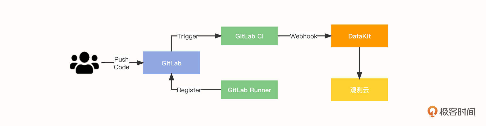
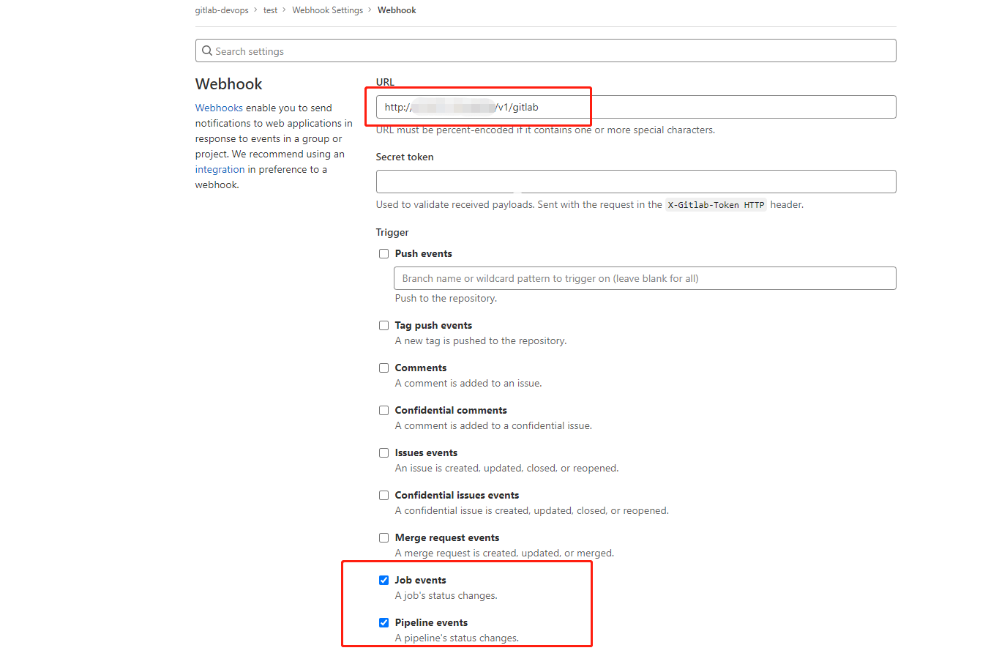
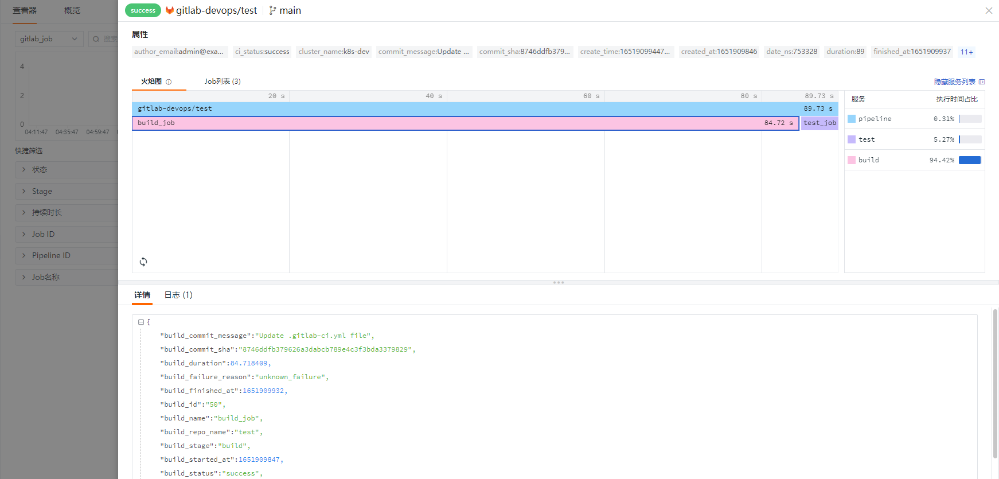
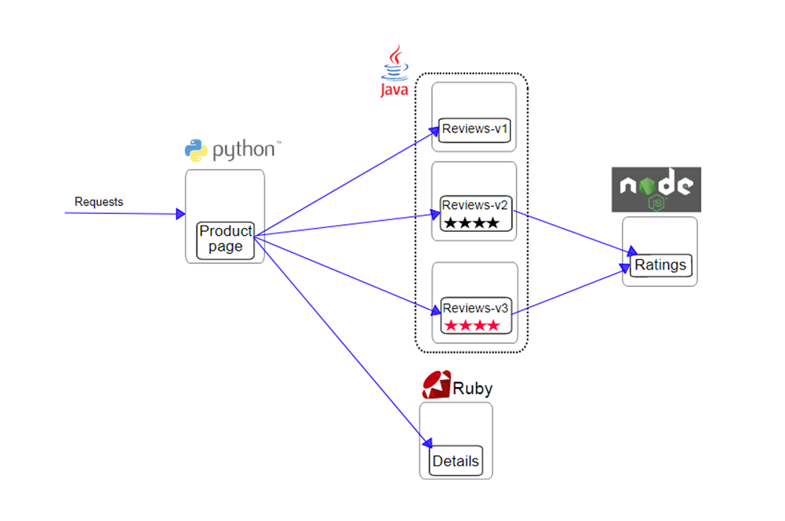
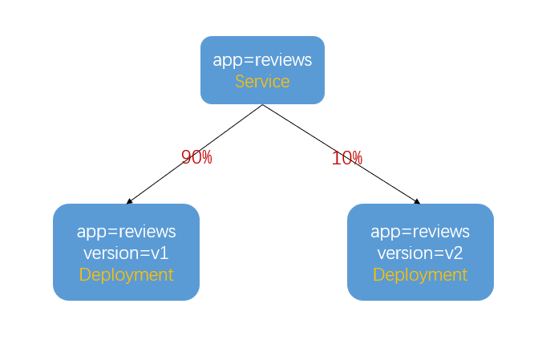
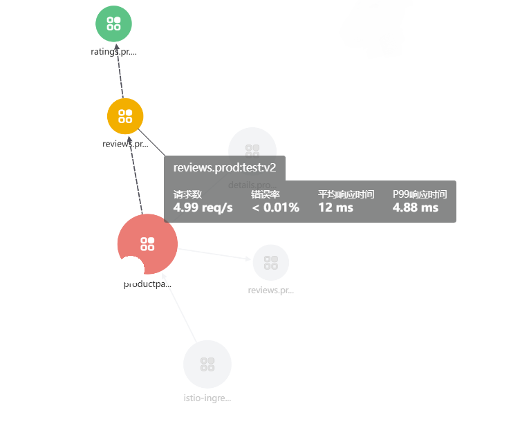
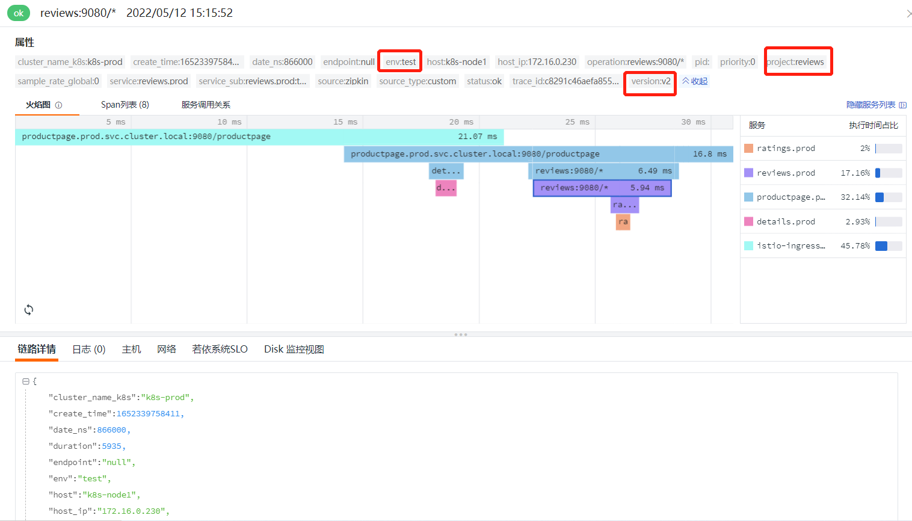
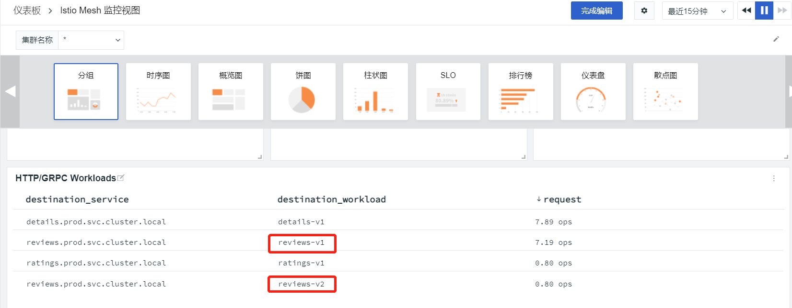
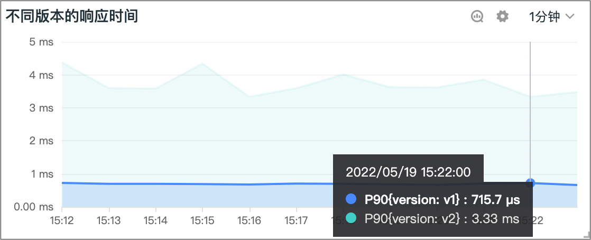

- 00 开篇词 可观测性，让开发和维护系统的你每晚都能睡个好觉！.md
- 01 以史鉴今：监控是如何一步步发展而来的？.md
- 02 基本概念：指标+日志+链路追踪=可观测性？.md
- 03 相互对比：可观测性和传统监控有什么区别？.md
- 04 OpenTelemetry：如何利用OpenTelemetry采集可观测数据？.md
- 05 构建可观测平台：应该购买商业产品还是自己搭建？.md
- 06 团队合作：不同团队如何高效共建可观测性？.md
- 07 软件开发：如何利用可观测性进行驱动？.md
- 08 建立 SLO：如何为系统可靠性的量化提供依据？.md
- 09 跟踪 SLO：如何基于错误预算采取行动？.md
- 10 实战 1：从 0 到 1 建立系统应用的可观测性.md
- 11 实战 2：基于可观测性数据进行问题分析和根因定位.md
- 12 实战 3：构建基于 Kubernetes 的系统可观测性.md
- 13 实战 4：建立软件持续集成和发布的可观测性.md
- 14 文化建设：如何构建可观测性的文化和框架_.md
- 15 展望未来：可观测性在未来的发展趋势是什么？.md
- 结束语 在实践中，用科学的方法分析和解决问题.md
13 实战 4：建立软件持续集成和发布的可观测性
你好，我是翁一磊。
在之前的课程中，我们就讲过可观测性对于构建 DevOps 的重要作用。而 CI/CD，持续集成（Continuous Integration）和持续交付（Continuous Delivery）就是 DevOps 的重要基础。在这一讲中，我会通过 GitLab 持续集成与金丝雀发布这两个具体的例子，来为你具体介绍一下怎么为这些过程建立可观测性。
首先来说一下持续集成。持续集成的重点是将各个开发人员的工作集合到一个代码仓库中。通常，我们每天都要进行几次持续集成，主要目的是尽早发现集成错误，让团队的合作更加紧密。而持续交付的目的是最小化部署或释放过程中固有的摩擦。它通常能够将构建部署的每个步骤自动化，以便（在理想情况下）在任何时刻都安全地完成代码发布。
常见的 CI 工具有 Jenkins、Travis CI、GoCD 和 GitLab CI 等等。这节课，我会以 GitLab 为例，为你介绍软件持续集成的可观测。
GitLab 软件持续集成可观测
GitLab CI 是为 GitLab 提供持续集成服务的一整套系统。GitLab 8.0 以后的版本是默认集成了 GitLab-CI 并且默认启用的。
使用 GitLab CI 需要在仓库根目录创建一个 gitlab-ci.yml 的文件，开发人员通过 gitlab-ci.yml 在项目中配置 CI/CD 流程，在提交后，系统就会自动或被手动地执行任务，完成 CI/CD 操作。
GitLab CI 的配置非常简单，可以通过 GitLab-Runner 配合 GitLab-CI 来使用。
GitLab-Runner 是一个用来执行软件集成脚本的东西。一般来说，GitLab里面的每一个工程都会定义一个属于这个工程的软件集成脚本，它可以自动化地完成一些软件集成工作。当这个工程的仓库代码发生变动时，比如有开发人员提交了代码，GitLab 就会把这个变动通知给 GitLab-CI，然后 GitLab-CI 会找到和这个工程相关联的 Runner，通知 Runner 把代码更新到本地并执行预定义好的执行脚本。
GitLab Runner 由 Go 语言编写，最终打包成单文件，所以只需要一个 Runner 程序和一个用于运行 Jobs 的执行平台就可以运行一套完整的 CI/CD 系统。执行平台可以是物理机或虚拟机、或是容器 Docker 等，我更推荐使用 Docker，因为它搭建起来相当容易。
随着微服务的流行，企业开始将软件单体服务架构逐渐过渡到微服务架构。微服务的一个特点是工程模块众多，部署起来也相对麻烦，CI/CD 工具虽然能够很好地集成交付，但是集成过程中出现的一些问题很难进行统计分析，可观测性可以很好地解决这个问题。
接下来，我还是以观测云为例，带你来看一看如何构建持续集成的可观测性。我们可以通过可视化功能直接查看在 GitLab 的 CI 结果，包括 Pipeline 和 Job 的成功率、失败原因、具体失败环节，为你的代码更新提供保障。
CI 可观测性构建流程
在本节课的实战示例中，软件集成的可观测构建流程如下：
- 开发人员 commit & push code；
- GitlabRunner 向 GitLab 注册；
- GitLab Trigger 触发执行 Gitlab-CI；
- Gitlab-CI 执行完成后，触发 Webhook 将数据推送给 DataKit；
- DataKit 对数据进行处理，然后推送至观测云平台。

部署和配置 GitLab
可以使用如下方式安装 GitLab，其中端口 8899 是 gitlab-ui 端口，而 2443 是 gitlab ssl 端口。
docker run --name=gitlab -d -p 8899:8899 -p 2443:443 --restart always --volume /data/midsoftware/gitlab/config:/etc/gitlab --volume /data/midsoftware/gitlab/logs:/var/log/gitlab --volume /data/midsoftware/gitlab/data:/var/opt/gitlab docker.io/gitlab/gitlab-ce
然后，修改 gitlab.rb 配置文件，重启，查看 GitLab 版本号以及初始密码。
这些都完成以后，可以使用账号 root，在浏览器中登录 http://ip:8899 并修改密码，然后通过菜单 Projects-> Your projects -> New projects -> Create blank project，创建第一个工程项目。
#访问地址
external_url 'http://192.168.91.11:8899'
# 设置超时时间，默认 10（单位 s）
gitlab_rails['Webhook_timeout'] = 60
docker restart gitlab
docker exec -it gitlab cat /opt/gitlab/embedded/service/gitlab-rails/VERSION
docker exec -it gitlab cat /etc/gitlab/initial_root_password |grep Password
接下来，我们使用如下命令安装 GitLab-Runner：
docker run -d --name gitlab-runner --restart always \
-v /data/midsoftware/gitlab-runner/config:/etc/gitlab-runner \
-v /var/run/docker.sock:/var/run/docker.sock \
gitlab/gitlab-runner:latest
因为 GitLab Runner 目前不支持全局配置，所以 Runner 的密钥只能去 project 里面查找。进入刚刚创建的 project -> settings -> runners，复制密钥，下一步 Runner 注册的时候会用到它。
接下来，我们使用下面这个命令将 Gitlab-Runner 注册到 Gitlab。参数的使用方法可以参考 GitLab 文档。
docker run --rm -v /data/midsoftware/gitlab-runner/config:/etc/gitlab-runner gitlab/gitlab-runner register \
--non-interactive \
--executor "docker" \
--docker-image alpine:latest \
--url "http://192.168.91.11:8899" \
--registration-token "U6uhCZGPrZ7tGs6aV8rY" \
--description "gitlab-runner" \
--tag-list "docker,localMachine" \
--run-untagged="true" \
--locked="false" \
--access-level="not_protected"
下一步，我们就需要配置 GitLab Webhook 了。我们要进入刚刚创建的项目，选择 Settings -> Webhooks，填写 URL，勾选 Job events 和 Pipeline events，保存。
然后可以点击 Test ，选择 Pipeline events ，这时会触发一个 Pipeline 事件将数据推送给我们刚刚配置的 Webhook 地址。查看状态，检测这个过程是否正常。

最后，我们还要编写 .gitlab-ci.yml。进入刚刚创建的项目，选择 CI/CD-> Editor，填写脚本内容，内容如下所示。点击保存后，自动触发 CI/CD，触发后会将过程通过 Webhook 推送到刚刚配置的 Webhook 地址。
# 设置执行镜像
image: busybox:latest
# 整个pipeline 有两个 stage
stages:
- build
- test
before_script:
- echo "Before script section"
after_script:
- echo "After script section"
build_job:
stage: build
only:
- master
script:
- echo "将内容写入缓存"
- sleep 80s
# - d ps
test_job:
stage: test
script:
- echo "从缓存读取内容"
CI 可观测数据采集和展现
如果需要采集 GitLab CI 过程中的数据，就像前几节课介绍的，我们首先需要部署和安装 DataKit，然后打开 DataKit 的 gitlab.conf 文件，重启 DataKit。
cd conf.d/gitlab
cp gitlab.conf.sample gitlab.conf
等到 Pipeline 推送成功后，我们可以使用可视化的方式，通过观测云平台的仪表盘和查看器观测 Pipeline 的整体执行情况。具体方式是：在菜单 CI 中选择概览，查看 Pipeline 和 Job 总体执行情况，包括 Pipeline 执行的成功率、执行时间，Job执行的成功率、执行时间等。
进入查看器，我们还可以查看 Pipeline 和 Job 每次执行的具体情况，点击明细可以查看火焰图和 Job 列表，进一步分析 Job 执行详细情况。

金丝雀发布可观测
说完了集成，让我们再来看一看发布。
在移动互联网时代，用户对产品新功能的要求越来越多，软件迭代的速度也越来越快。但是，如果每次发布新版本都是直接替换老版本，这种跳跃式的发布是非常危险的。因为就算我们做到了完全自动化的持续集成和发布，也很难检测到所有和发布相关的缺陷，只有在生产环境中，大量真实用户开始使用产品时，我们才会发现之前可能完全没有预料到的问题。
因此，金丝雀发布是现在互联网软件常用的一种发布方式。这个名称起源于以前人们会将金丝雀带入煤矿，通过它们来检查煤矿中是否有危险气体，以此保证人类的安全。而这里所说的金丝雀发布也是为了安全起见而存在的。
金丝雀发布是指在发布新版本的时候，先切分部分的流量给新版本，等系统稳定了之后再切分所有流量。这样一旦出现问题，我们只需要马上修改切分的流量，不需要重新发布版本，这就大大减少了发布风险。
在金丝雀发布的场景下，可观测性也是必不可少的。通过可观测性，工程师们能够知道新版本上线开始接收部分流量后的运行状态，从而分析出系统是否正在按照期望运行，新版本的使用是否正常等情况，从而判断下一步的动作。
我在第 12 讲中，为你介绍了通过服务网格部署 BookInfo 的应用软件。这一讲我也会使用它来为你介绍金丝雀发布的场景。在这个场景里，里面的 reviews 微服务提供了3个版本：
- 版本 v1，不调用 ratings 服务；
- 版本 v2，调用 ratings 服务，并将每个等级显示为 1 到 5 个黑星；
- 版本 v3，调用 ratings 服务，并将每个等级显示为 1 到 5 个红色星号。
如果需要测试多个版本的 reviews 服务，你可以先参考这里的步骤，重新进行部署（主要是去除 reviews 服务的部署）；然后通过 GitLab-CI，对 reviews 服务进行自动化部署，可以参考这里的文档。示意图如下：

为了实现金丝雀发布，需要在部署微服务的 Deployment 上增加 app=reviews 的标签，用来区分微服务名称。
在第一次部署的版本上增加 version=v1 的标签，第二次部署的版本上增加 version=v2 的标签。这样，根据标签就可以控制每个版本进入了多少流量了。比如，发布完 v2 后，让 90% 的流量进入 v1 版本，10% 的流量进入 v2 版本，等验证没问题之后，将流量完全切换到 v2 版本，下线 v1 版本，这样整个发布的过程就完成了。
整个模拟和配置的过程我就不详细介绍了，你可以参考这里的步骤。（请注意，如果你参考之前的文档，使用 GitLab-CI 部署了 3 个版本的 reviews 服务，可参考此处步骤删除之前部署的服务；如果你没有使用 Rancher 进行部署，可以直接使用 kubectl 命令，对之前部署的 reviews 服务进行 delete，然后 apply 重新进行发布）。

在做了不同版本的应用发布和流量切分之后，让我们来看一下实际的金丝雀发布可观测效果。
登录观测云，在应用性能监测的服务拓扑里面，打开“区分环境和版本”的配置，可以看到reviews 服务有两个版本，其中， reviews:test:v2 调用 ratings 服务，而 reviews:test:v1 是没有调用的。

在链路详情界面查看火焰图，如果存在链路调用错误，或者超时等问题，这里都能清晰地看到。这里的 project、version 和 env 标签，就是在 GitLab 中 bookinfo-views 项目的 deployment.yaml 文件定义的 annotations。通过对整个应用进行链路追踪，我们就能在观测云上查看应用的健康关键指标，及时处理异常请求了。

同时，我们也可以构建针对不同版本应用的请求和响应时间等各维度的监测。这样，我们能够对线上环境的金丝雀发布进行观测，从而了解版本流量切换的状态，确保使用新版本的用户能够正常地使用产品。
在观测云的“场景”菜单中，可以新建仪表板，并选择内置的 Istio Mesh 监控视图。在这个视图里面可以看到调用 reviews-v1 和 reviews-v2 的比例基本是 9:1.

如果应用的状态稳定，我们就可以将流量全部切换到新版本；而如果发现问题，例如图中可以看到 v2 的响应时间有所增加，因为引进了一个新的 ratings 服务。假如响应时间影响了用户的使用，这时候就需要将流量切回到 v1 版本，在优化 v2 的性能之后，重新进行金丝雀发布，查看服务和用户使用的状态。

小结
好了，这节课就讲到这里。
这节课，我通过 GitLab-CI 建立可观测性的例子，让你更好地了解了持续集成流水线和任务的执行状态；同时，我还通过一个为金丝雀发布建立可观测性的例子，介绍了在为基于 Service Mesh 服务架构的应用发布过程中，如何更高效地发现新版本的问题，为提升软件质量提供保障。这些，都是可观测性在实际软件集成和发布过程中的具体应用，希望能够帮助你更具体地理解可观测性。
思考题
在这节课的最后，留给你一道思考题。
你在实际的工作中，有没有负责过软件的集成和发布，遇到过什么难点？如果建立了可观测性，这些问题是否能够解决？欢迎你在留言区留言进行分享和讨论。
我们下节课见！
© 2019 - 2023 Liangliang Lee. Powered by gin and hexo-theme-book.